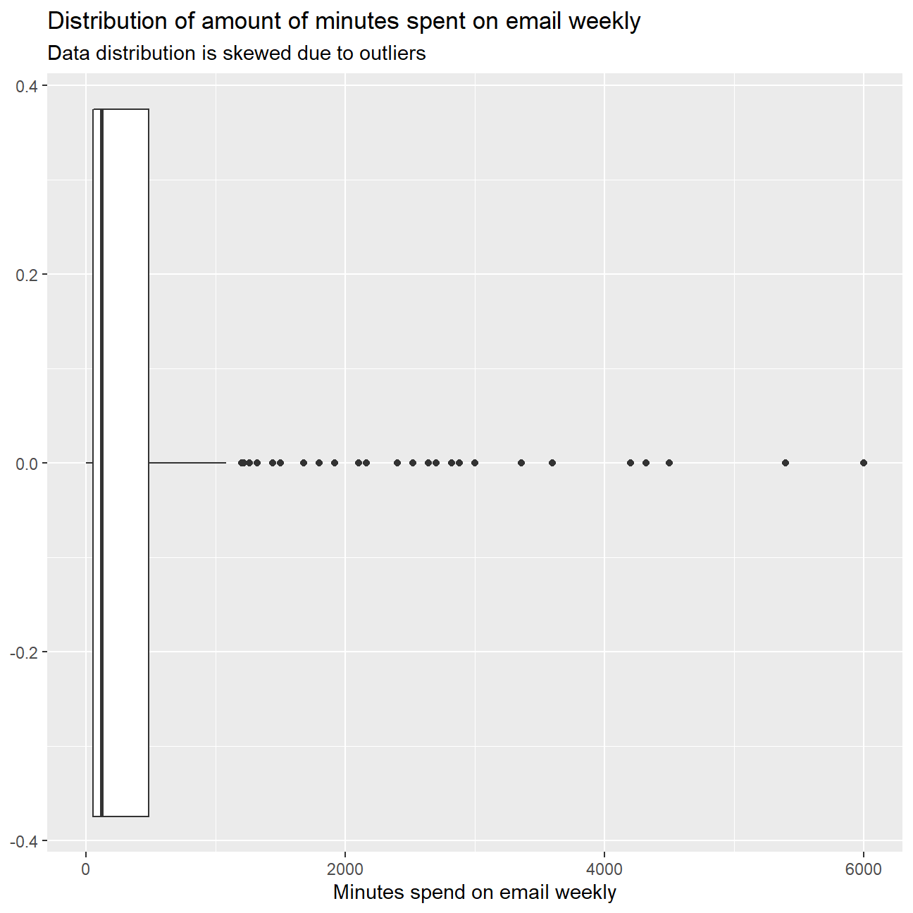
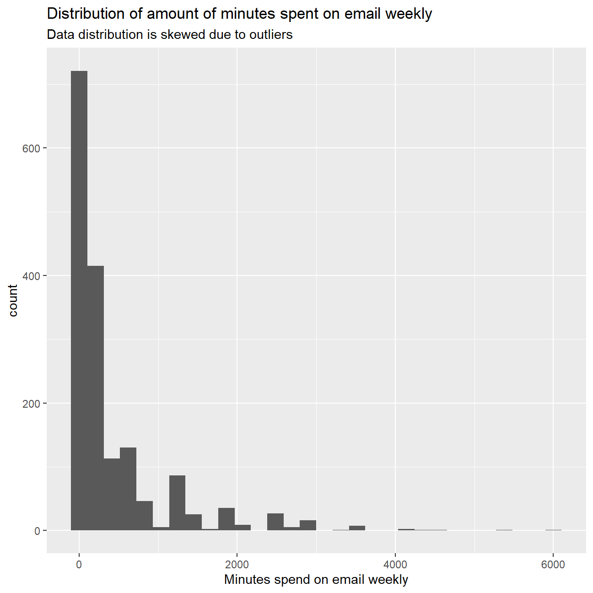

#Introduction
Welcome to my blog on the General Social Survey. In this blog, I will showcase the analysis that I did as part of the Data Analytics for Finance course at London Business School.
The General Social Survey (GSS) gathers data on American society in order to monitor and explain trends in attitudes, behaviours, and attributes. Many trends have been tracked for decades, so one can see the evolution of attitudes, etc in American Society.
In this assignment we analyze data from the 2016 GSS sample data, using it to estimate values of population parameters of interest about US adults. The GSS sample data file has 2867 observations of 935 variables, but we are only interested in very few of these variables and you are using a smaller file.
gss <- read_csv(here::here("data", "smallgss2016.csv"),
na = c("", "Don't know",
"No answer", "Not applicable"))We will be creating 95% confidence intervals for population parameters. The variables we have are the following:
emailhr and emailmin variables. For example, if the response is 2.50 hours, this would be recorded as emailhr = 2 and emailmin = 30.snapchat, instagrm, twitter: whether respondents used these social media in 2016sex: Female - Maledegree: highest education level attainedWe estimate the population proportion of Snapchat or Instagram users in 2016.
snap_insta that is Yes if the respondent reported using any of Snapchat (snapchat) or Instagram (instagrm), and No if not. If the recorded value was NA for both of these questions, the value in your new variable should also be NA.snap_insta among those who answered the question, i.e. excluding NAs.#add a culumn that is "Yes" of both instagrm and snapchat are "Yes", that is "NA" if both instagrm and snapchat are "NA", and is "No" otherwise.
#gss <- gss %>%
# mutate(snap_insta = ifelse(snapchat=="Yes" | instagrm == "Yes","Yes",ifelse(snapchat=="NA" & instagrm == "NA", "NA", "No")))
gss <- gss %>%
mutate(snap_insta = if_else(snapchat == "NA" & instagrm == "NA", "NA", if_else(snapchat == "Yes" | instagrm == "Yes", "Yes", "No")))
#calculate proportion of Yes's.
#First, we calculate the total amount of Yes's
gss_snap_insta_yes <- gss %>%
select(snap_insta) %>%
filter(snap_insta =="Yes") %>%
summarize(count_yes = n())
#Second, we calculate the total amount of Yes's and No's
gss_snap_insta_yes_and_no <- gss %>%
select(snap_insta) %>%
filter(snap_insta =="Yes" | snap_insta =="No") %>%
summarize(count_yes_and_no = n())
#Third, we calculate the total proportion by deviding the two above.
snap_insta_proportion <- gss_snap_insta_yes / gss_snap_insta_yes_and_no
#TO DO: How to visualize this now? View correct?
#CI for men and women using either Snapchat or Instagram.
gss_ci_calculations <- gss %>%
group_by(sex, snap_insta) %>%
summarize(count = n()) %>%
filter(snap_insta == "Yes" | snap_insta == "No") %>%
summarize(
snap_insta,
count,
total_gender = sum(count),
proportions = count / total_gender,
SE = sqrt(proportions*(1-proportions)/total_gender), #formula for SE since conditions np and n(1-p) >= 10 are met
critical_Z = qnorm(0.975),
lower_end = proportions - critical_Z*SE,
higher_end = proportions + critical_Z*SE
)
gss_ci_overview <- gss_ci_calculations %>%
filter(snap_insta == "Yes") %>%
select(lower_end, higher_end)
gss_ci_overview %>%
kbl(col.names = c("Gender", "Lower CI","Upper CI")) %>%
kable_material(c("striped", "hover")) %>%
kable_styling(fixed_thead = T)| Gender | Lower CI | Upper CI |
|---|---|---|
| Female | 0.384 | 0.454 |
| Male | 0.281 | 0.356 |
We estimate the population proportion of Twitter users by education level in 2016.
There are 5 education levels in variable degree which, in ascneding order of years of education, are Lt high school, High School, Junior college, Bachelor, Graduate.
degree from a character variable into a factor variable. Make sure the order is the correct one and that levels are not sorted alphabetically which is what R by default does.bachelor_graduate that is Yes if the respondent has either a Bachelor or Graduate degree. As before, if the recorded value for either was NA, the value in your new variable should also be NA.bachelor_graduate who do (Yes) and who don’t (No) use twitter.bachelor_graduate vs whether they use (Yes) and don’t (No) use twitter.#Create a list for different degree levels, ordered by ascending years of education.
degree_levels <- c("Lt high school","High School","Junior college","Bachelor","Graduate")
#Making the degree variable a factor and assigning the degree levels.
gss_degree_factor <- gss %>%
mutate(degree = factor(degree, ordered = TRUE, levels = degree_levels))
#create "bachelor_graduate" variable that is "yes" if respondent is either a "Bachelor" or a "Graduate". If the recorded value for either is "NA", the new variable should also be "NA"
gss_degree_factor_newvar <- gss_degree_factor %>%
mutate(bachelor_graduate = ifelse(degree=="Bachelor" | degree == "Graduate","Yes",ifelse(degree=="NA", "NA", "No")))
#Calculating the proportions
gss_twitter_prop <- gss_degree_factor_newvar %>%
group_by(bachelor_graduate, twitter) %>%
summarize(count = n()) %>%
filter((bachelor_graduate == "Yes" | bachelor_graduate == "No")&(twitter =="Yes" | twitter == "No")) %>%
mutate(total_bachelor_graduate = sum(count)) %>%
summarize(
twitter,
count,
total_bachelor_graduate,
proportions = count / total_bachelor_graduate
)
#Calculating the CIs
gss_twitter_ci <- gss_twitter_prop %>%
summarize(
twitter,
count,
total_bachelor_graduate,
proportions = count / total_bachelor_graduate,
SE = sqrt(proportions*(1-proportions)/total_bachelor_graduate), #formula for SE since conditions np and n(1-p) >= 10 are met
critical_Z = qnorm(0.975),
lower_end = proportions - critical_Z*SE,
higher_end = proportions + critical_Z*SE
)
#Make an overview of the CIs
gss_twitter_ci_overview <- gss_twitter_ci %>%
filter(bachelor_graduate == "Yes") %>%
select(twitter,lower_end,higher_end)
gss_twitter_ci_overview %>%
kbl(col.names = c("Bachelor or graduate","Twitter user" ,"Lower CI","Upper CI")) %>%
kable_material(c("striped", "hover")) %>%
kable_styling(fixed_thead = T)| Bachelor or graduate | Twitter user | Lower CI | Upper CI |
|---|---|---|---|
| Yes | No | 0.729 | 0.804 |
| Yes | Yes | 0.196 | 0.271 |
#Note that the two CIs do not overlapWe estimate the population parameter on time spent on email weekly.
email that combines emailhr and emailmin to reports the number of minutes the respondents spend on email weekly.ANSWER: The mdian is a better measure as it is not impacted by outliers.
infer package, calculate a 95% bootstrap confidence interval for the mean amount of time Americans spend on email weekly. Interpret this interval in context of the data, reporting its endpoints in “humanized” units (e.g. instead of 108 minutes, report 1 hr and 8 minutes). If you get a result that seems a bit odd, discuss why you think this might be the case.ANSWER: A 99% confidence interval is expected to be wider since we need to be more certain that the true population parameter sits in this interval. The wider the interval, the bigger the confidence, and vice versa.
gss[gss=="NA"] <- NA
#Create new variable "email" putting the time spent in total amount of minutes.
gss_email <- gss %>%
select(emailmin,emailhr,sex) %>%
na.omit() %>%
mutate(
emailhr = as.integer(emailhr),
emailmin = as.integer(emailmin),
email= emailhr * 60 +emailmin)
#TO DO: check if plots work
#Visualize the distribution.
ggplot(gss_email,aes(email))+
geom_boxplot() +
labs(x="Minutes spend on email weekly", title = "Distribution of amount of minutes spent on email weekly", subtitle = "Data distribution is skewed due to outliers")
#Another way to visualize the distribution.
ggplot(gss_email,aes(email))+
geom_histogram() +
labs(x="Minutes spend on email weekly", title = "Distribution of amount of minutes spent on email weekly", subtitle = "Data distribution is skewed due to outliers")
#Calculating mean and median.
gss_email_mean_and_median <- gss_email %>%
summarise(
mean = mean(email), #better measure since not impacted by outliers
median = median(email)
)
gss_email_mean_and_median %>%
kbl(col.names = c("Mean","Median")) %>%
kable_material(c("striped", "hover")) %>%
kable_styling(fixed_thead = T)| Mean | Median |
|---|---|
| 417 | 120 |
#bootstrap confidence interval
library(infer)
gss_bootstrap_email_ci <- gss_email %>%
specify(response = email) %>%
generate(reps=100,type="bootstrap") %>%
calculate(stat = "mean") %>%
get_confidence_interval(level=0.95, type="percentile") %>%
mutate(
lower_ci = lower_ci /60,
upper_ci = upper_ci /60) %>%
separate(lower_ci, c("lower_ci_hours", "lower_ci_minutes"), sep = "(?=\\d{2}$)") %>%
separate(upper_ci, c("upper_ci_hours", "upper_ci_minutes"), sep = "(?=\\d{2}$)")
gss_bootstrap_email_ci %>%
kbl(col.names = c("lower_ci_hours", "lower_ci_minutes","upper_ci_hours", "upper_ci_minutes")) %>%
kable_material(c("striped", "hover")) %>%
kable_styling(fixed_thead = T)| lower_ci_hours | lower_ci_minutes | upper_ci_hours | upper_ci_minutes |
|---|---|---|---|
| 6.524558570851 | 02 | 7.466061249241 | 96 |